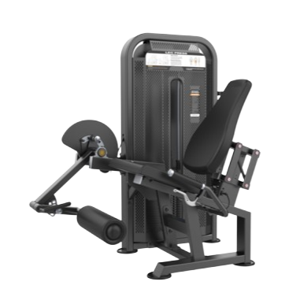
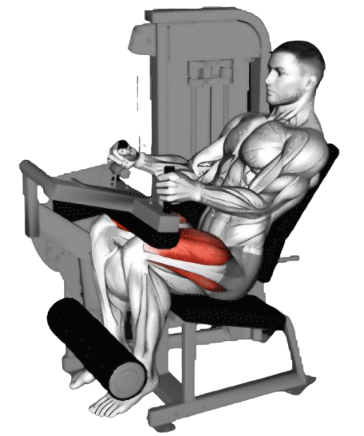
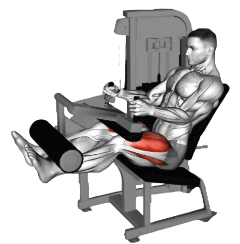

레그익스텐션

- 조절 장치를 사용해 패드를 무릎 위쪽에 위치시킨다.
- 허벅지 근육을 수축하며 다리를 앞으로 쭉 뻗는다. 이때 무릎이 완전히 펴질 때까지 올려준다.
- 무릎이 거의 완전히 펴질 때 잠깐 멈추고 이 위치에서 1~2초간 유지한다.
- 이때 호흡은 마신다.
- 정상 위치로 천천히 다리를 내린다. 이때 근육의 긴장감을 유지하며 부드럽게 내려온다.
- 이때 호흡은 뱉는다.

주의사항
- 운동의 속도를 일정하게 유지한다. 너무 빠른 동작은 부상의 위험이 있다.
- 다리를 올릴때 반동을 주지 않는다.
- 부상을 방지하기 위해 항상 준비 운동과 스트레칭을 한다.
운동부위 및 효과
- 대퇴사두근
- 허벅지 근육을 탄탄하게 만들어 다리의 라인과 모양을 개선하는 효과가 있다.
- 대퇴사두근을 강화하면 무릎 주변 근육이 안정되어 부상 예방에 도움이 된다